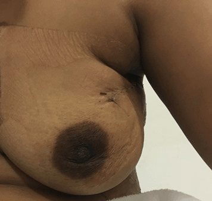

स्तनाचा कर्करोग
ऑनकोप्लास्टिक स्तन वाचविण्याची शस्त्रक्रिया
राधा (नाव बदलले आहे), या 35 वर्षीय महिलेला स्तनाच्या कर्करोगासाठी स्तन वाचविण्याची शस्त्रक्रिया करण्याचा सल्ला दिला गेला. तिला भिती वाटते आहे की अशा प्रकारच्या शस्त्रक्रियेनंतर सौंदर्यामध्ये दोष निर्माण होईल कारण स्तनाच्या मोठ्या प्रमाणावर उती काढल्या जातील. ती विचार करते आहे की स्तन वाचविण्याच्या शस्त्रक्रियेनंतर तिच्या स्तनाला पुन्हा आकार देण्यास मदत करणारी कोणती तांत्रिक प्रगती झालेली आहे का.
स्तन वाचविण्याची शस्त्रक्रिया:
-
यामध्ये बराच मोठा स्थानिक भाग कापून काढण्याचा समावेश होतो (ज्यामध्ये थोड्या प्रमाणात आसपासच्या उतींसह गाठ काढली जाते)
स्तन वाचविण्याची शस्त्रक्रिया -
बराच मोठा स्थानिक भाग कापून काढणे
 सौजन्य: ब्रेस्ट कॅन्सर केअर, युके
सौजन्य: ब्रेस्ट कॅन्सर केअर, युके
ऑनकोप्लास्टिक स्तन वाचविण्याची शस्त्रक्रिया काय आहे?
ऑनकोप्लास्टिक स्तन वाचविण्याची शस्त्रक्रिया हा गेल्या 20 वर्षांतील सर्वात मनोरंजक आणि आव्हानात्मक नवीन बदल आहे. ऑनकोप्लास्टिक शस्त्रक्रियेचा हेतू हा बराच मोठा स्थानिक भाग कापून काढण्याचा असतो ज्यामध्ये स्तनातील दोषाची आंशिक स्वरूपात पुर्नबांधणी केली जाते ज्यामुळे सौदर्याच्या दृष्टीन स्वीकारार्ह निकाल मिळू शकतात. विविध ऑनकोप्लास्टिक स्तन वाचविण्याच्या शस्त्रक्रिया विकसीत करण्यामागील हेतू हा मास्टेक्टॉमी टाळणे, मानसिक विकृती ठळकपणे कमी करणे आणि रुग्णाला समाधान देणे हे असतात. ऑनकोप्लास्टिक शस्त्रक्रियेमुळे काळजीपूर्वकपणे निवडलेल्या रुग्णांमध्ये रुग्णाला मास्टेक्टॉमी करावी न लागता स्तनाचा मोठा भाग काढता येतो..
स्तनाची पुर्नबांधणी आणि ऑनकोप्लास्टिक स्तन वाचविण्याची शस्त्रक्रिया एकच आहेत का?
ऑनकोप्लास्टिक स्तन वाचविण्याच्या शस्त्रक्रियेची मास्टेक्टॉमीनंतर केल्या जाणाऱ्या स्तनाच्या पुर्नबांधणीसह गल्लत करू नये. शल्यविशारदाने मास्टेक्टॉमी करून नंतर प्लास्टिक सर्जनला पुर्नबांधणी करू देणे जरी शक्य असले तरी ऑनकोप्लास्टिक स्तन वाचविण्याच्या शस्त्रक्रियेमध्ये हे शक्य नसते कारण चांगल्या ऑनकॉलॉजिकल आणि कॉस्मेटिक निष्पत्तीसाठी ऑनकॉलॉजिकल आणि प्लास्टिक सर्जरी दोन्हींचे ज्ञान एकाच व्यक्तीला असावे लागते..
ऑनकोप्लास्टिक स्तनाची शस्त्रक्रिया - मुलभूत गोष्टी
-
अनेक महिला पुनरुद्भवाच्या भितीने स्तन वाचविण्याच्या शस्त्रक्रियेपेक्षा मास्टेक्टॉमीला पसंती देतात. गेल्या दोन दशकांतील विविध परीक्षणांतून आता हे सर्वज्ञात झाले आहे की जिवंत राहण्याच्या अटींनुसार मास्टेक्टॉमी आणि स्तन वाचविण्याची शस्त्रक्रिया समान पातळीवर आहेत. तथापि, स्तन वाचविण्याच्या शस्त्रक्रियेनंतर स्थानिक पुनरुद्भव सर्वात कमी असेल (वार्षिक सुमारे 1:) याची खात्री करण्यासाठी शल्यविशारद कुशल असणे आवश्यक आहे. कर्करोगाच्या सभोवतीच्या स्पष्ट सामान्य मोकळ्या जागेसह विकारस्थल काढून हे साध्य करता येते. जर शल्यविशारदाने कर्करोगाच्या उती मागे ठेवल्या किंवा जर जखमेभोवतीच्या जागेमध्ये अजुनही कर्करोगाच्या उती असतील तर, शस्त्रक्रियेनंतर स्थानिक पुनरुद्भवाची मोठी जोखिम असते.
-
ऑनकोप्लास्टिक स्तनाच्या शस्त्रक्रियेची संकल्पना नवीन आहे ज्यासाठी तीन भिन्न कौशल्यांबाबत ज्ञान असणे आवश्यक असते: सर्जिकल ऑनकॉलॉजी, प्लास्टिक सर्जरी आणि ब्रेस्ट रेडिओलॉजी. ऑनकोप्लास्टिक स्तन वाचविण्याची शस्त्रक्रिया हे स्तनाच्या शस्त्रक्रियेतील एक कल्पक आणि अत्याधुनिक उपकौशल्य आहे आणि समर्पित स्तन तज्ञासाठी आवश्यक कौशल्य आहे.
-
सौंदर्याच्या दृष्टीने मान्य स्तन वाचविण्याच्या शस्त्रक्रियेचे संकेत हे काळजीपूर्वकपणे निवडलेल्या रुग्णांमध्ये, स्तनाच्या चारही भागांचा समावेश असलेल्या कर्करोगापर्यंत सुरक्षितपणे विस्तारता येतात, त्यामुळे ऑनकोप्लास्टिक सर्जरीसाठी उपलब्ध असलेले स्त्रोत विस्तारित होतात.
निष्कर्ष
ऑनकोप्लास्टिक स्तनाच्या शस्त्रक्रियेच्या या युगामध्ये, ठळक विकृतीसह स्तनाचे विकारस्थल काढणे अवाजवी ठरेल. सौंदर्याच्या दृष्टीने स्वीकारार्ह स्तन वाचविण्याच्या शस्त्रक्रियेची जगभरामध्ये स्पष्टपणे मागणी वाढत आहे. या दिवसांत आणि युगात, स्तनाची शस्त्रक्रिया सौंदर्यवर्धक निष्पत्तीचा विचार करून केली पाहिजे परंतु त्याचबरोबर ऑनकॉलॉजीशी निगडीत तडजोडही होऊ नये कारण कुरूपता येणे आणि विकारस्थलाला नुकसान पोहोचण्याचे स्पष्टीकरणही देता येत नाही आणि ते स्वीकारार्ह नाही.
केमोथेरपी देण्यापूर्वी स्थानिक प्रगत डाव्या स्तनाचा कर्करोग
निओ ऍडज्युवंट केमोथेरपीची ८ चक्रे पूर्ण केल्यानंतर शस्त्रक्रियेच्या पूर्वी कर्करोगामधील गाईड वायर दर्शविणारा डाव्या स्तनाचा मॅमोग्राम (CC दृश्य)
निओ ऍडज्युवंट केमोथेरपीची ८ चक्रे पूर्ण केल्यानंतर शस्त्रक्रियेच्या पूर्वी कर्करोगामधील गाईड वायर दर्शविणारा डाव्या स्तनाचा मॅमोग्राम (MLO दृश्य)
गाईड वायर सहाय्यित रुंद स्थानिक छेद – नमुना एक्स रे मध्ये कर्करोगाच्या मध्यभागी वायर दिसत आहे

निओ ऍडज्युवंट केमोथेरपीनंतर ऑन्कोप्लास्टिक ब्रीस्ट काँजर्विंग शस्त्रक्रियेनंतर दहा दिवस (शस्त्रक्रियेनंतरचे दृश्य) डावा स्तन
Six months - Left Breast after Oncoplastic Breast conserving surgery following neo adjuvant chemotherapy
सौजन्य: किम्स -स्तनाच्या आजारांसाठी उषालक्ष्मी केंद्र, हैद्राबाद
Mammogram (cranio caudal view) showing marker clip, which was placed after core needle biopsy of a small focus of DCIS left breast
Mammogram (medio lateral oblique) showing marker clip, which was placed after core needle biopsy of a small focus of DCIS left breast
Specimen X ray after Wide Local Excision of DCIS left breast
Tenth day Post operative view following Wide local Excision & Oncoplastic Breast conserving Surgery – left breast
Tenth day Post operative view following Wide local Excision & Oncoplastic Breast conserving Surgery – left breast
Tenth day Post operative view following Wide local Excision & Oncoplastic Breast conserving Surgery – left breast
Tenth day Post operative view following Wide local Excision & Oncoplastic Breast conserving Surgery – left breast